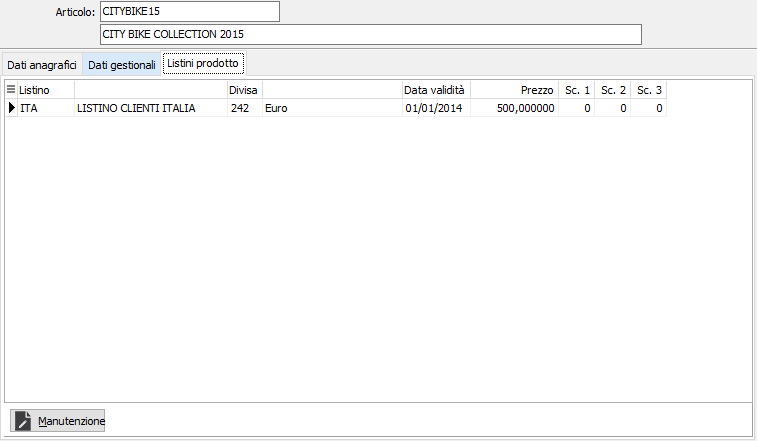

Dati gestionali

PREZZO BASE: campo numerico per il prezzo di vendita dell'articolo provvisorio, che viene proposto automaticamente in fase di immissione documento quando viene richiamato quell'articolo di magazzino.
PERCENTUALI SU MANODOPERA: Indicare la percentuale di incidenza della manodopera sul valore del prodotto; questo valore, se presente, viene proposto sui documenti ed è visibile solo se attiva la gestione IVA ristrutturazioni a livello di configurazione.
SCONTI: in base a quanto inserito in configurazione, possono comparire fino a 5 sconti. Inserire tali percentuali di sconto/maggiorazione in questi campi. Il segno è determinato da quello che si è inserito in configurazione sul campo "tipo trattamento sconti". In fase di immissione ordine, Ddt o fattura immediata, le percentuali sono proposte automaticamente come sconti/maggiorazioni di rigo.
GRUPPO PROVVIGIONE: codice alfanumerico di 3 caratteri, presente nella tabella Gruppi provvigioni. Sul campo sono attive le funzioni di ricerca (F9) e manutenzione (CTRL+W) della tabella stessa.
PROVVIGIONE: supposto che l’installazione preveda la gestione provvigioni su articoli standard, inserire la percentuale di provvigione riconosciuta sull'articolo. In fase di immissione offerta la percentuale viene proposta automaticamente e può essere modificata.
CODICE IVA: codice alfanumerico di 3 caratteri, presente nella tabella Aliquote Iva, che identifica l’aliquota Iva a cui è ordinariamente soggetto l’articolo provvisorio attivo. Sul campo sono attive le funzioni di ricerca e manutenzione della tabella stessa.
TRATTA REVERSE CHARGE: attivando questo campo vengono proposti i due campi successivi "Codice Iva reverse charge ACQ" e "Codice Iva reverse charge VEN" in base ai relativi codici presenti sul codice Iva principale; i due campi sono obbligatori se il campo "Tratta reverse charge" è spuntato.
C.IVA RC ACQ.: il campo, valido se attiva la spunta su "Tratta reverse charge" viene proposto come codice Iva di rigo nelle richieste di offerta.
C.IVA RC VEN.: il campo, valido se attiva la spunta su "Tratta reverse charge" viene proposto come codice Iva di rigo nelle offerte clienti solo per i clienti su cui è attiva la gestione “Vendita in reverse charge”.
CATEGORIA DI VENDITA: codice alfanumerico di 3 caratteri presente in tabella Categorie di vendita. Individua il codice della categoria attribuita all’articolo, che viene utilizzato in fase di costruzione della tabella aliquote provvigioni, nella gestione dei listini speciali e dei contratti. Sul campo sono attive le funzioni di ricerca e manutenzione della tabella stessa.
GRUPPO VENDITE: codice alfanumerico di 3 caratteri presente in tabella Gruppi statistici di vendita. Può essere inserito per selezioni di uso statistico. Sul campo sono attive le funzioni di ricerca e manutenzione della tabella stessa.
GRUPPO ACQUISTI: codice alfanumerico di 3 caratteri presente in tabella Gruppi statistici di acquisto. Può essere inserito per selezioni di uso statistico. Sul campo sono attive le funzioni di ricerca e manutenzione della tabella stessa.
CATEGORIA MERCEOLOGICA: codice alfanumerico di 3 caratteri che Identifica la categoria merceologica di appartenenza dell'articolo. Serve per le stampe selettive degli articoli, degli inventari e delle statistiche di vendita. Il codice deve essere presente nella tabella delle categorie merceologiche. Sul campo sono attive le funzioni di ricerca e manutenzione della tabella stessa.
CODICE INVENTARIO: eventuale codice alfanumerico di 8 caratteri, presente nella tabella Codici inventario, che identifica un gruppo di articoli omogenei di cui l’articolo attivo fa parte, nel caso in cui si vogliano gestire gli inventari fiscali a gruppi omogenei. Sul campo sono attive le funzioni di ricerca e manutenzione della tabella stessa.
FORNITORE ABITUALE: eventuale codice del fornitore abituale del prodotto, presente nell’anagrafica fornitori. Sul campo sono attive le funzioni di ricerca e manutenzione della tabella stessa.
CONTO DI RICAVO: codice alfanumerico di 8 caratteri presente nella tabella sottoconti. È il sottoconto attribuito al prodotto da utilizzare a livello di contabilizzazione delle fatture di vendita. Sul campo sono attive le funzioni di ricerca e manutenzione della tabella stessa.
TIPOLOGIA DI RICAVO: codice alfanumerico di 3 caratteri presente in tabella Tipologie di ricavo. Sul campo sono attive le funzioni di ricerca e manutenzione della tabella stessa.